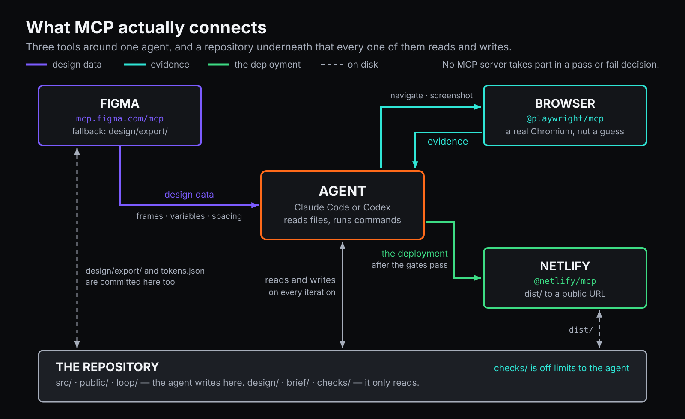

During the workshop
You need the design and this page. There is nothing to clone and no code to read — everything else, your agent makes for itself.
Paste each prompt whole. The rules in them matter as much as the request, and cutting a prompt down to its first sentence is the commonest way to get a disappointing answer.
Everything on the slides, on one page, so you can read it back afterwards instead of photographing a screen. The pictures are the same ones on the wall, and they are yours to reuse.
The ninety minutes

Three hands-on stretches, and the middle one runs on your machine while I talk over it. Nothing here needs the previous thing to have worked — every prompt stands alone, and falling behind costs you nothing but the part you skipped.
What you leave with: a URL that is live on the internet, a folder containing a page and a program that checks it, and eight prompts that work on Monday against something that is not a festival site.
Most AI demos stop at wow
A prompt goes in. Something impressive comes out. Everyone claps. Then somebody asks a question the demo was not built to survive:
Does it match the design? Is the contrast legal? Does it work on a phone? Is that the actual copy, or copy it invented?
No answer. Not a wrong answer — no mechanism capable of producing one.
A loop is only worth building if something in it can say no without asking a language model for permission.
The loop

The interesting part is not the arrow that generates code. It is the box that refuses.
The arrow going back is driven by a file — a report a program wrote — not by the agent's impression of its own work. That is the whole difference.
A real loop and a fake one

The fake loop feels productive. It produces sentences like "I have reviewed my work and improved it", which are indistinguishable from the real thing right up until something external disagrees.
The same model writes the same page in both diagrams. What changes is who is allowed to say no.
Where self-assessment is fine, and where it is not
| Fine | Not fine |
|---|---|
| Is this sentence any good | Is this correct |
| Which of these five findings matters most | Is this accessible |
| Does this read as the same brand | Does this match the design |
| Is the hierarchy clear | Is it finished |
The left column has no external truth to check against, so a thoughtful opinion is the best instrument available. The right column has one — so use it, and do not accept an opinion instead.
Two shapes

A loop is do this again until a condition holds. You define the exit condition. → prompt 05, and /goal in Claude Code.
A workflow is do these things, in this order, with a bar between each. You define the phases and what has to be true before the next one starts. → prompt 08.
Neither is a script. Both are things you say — which is why changing one is a sentence rather than an edit, a test run and a redeploy.
They nest. The workflow gets you from nothing to nearly-right; a loop inside one of its phases closes the last gap.
Plan first, and read the plan
The cheapest correction in the whole loop is the one made before any code exists.
In Claude Code, press Shift+Tab until the footer says plan mode on. It cannot edit anything until you approve. In Codex, ask for the plan and refuse to accept code until you have read it:
Do not write any code yet. Tell me what you found and what you intend to build,
section by section, and wait.That is what prompt 02 is. It writes nothing at all — it looks at the design and reports back. A designer reading three paragraphs and saying "no, the lineup comes before the tickets" has just saved twenty minutes of confident, wrong building.
The best time to catch a misunderstanding is while it is still a sentence.
Three tiers of checking

The bottom tier is cheap, certain and narrow. The top tier catches what the others cannot and is the least reliable thing in the stack. Neither replaces the other, and a system with only the top tier is a system that agrees with itself.
The failure report is the interface
This is the part people skip, and it is the part that makes the loop work. What comes back from the checker is a file, and it is written for two readers at once: a person at 2am, and an agent that has no memory of the last iteration.
**3. [AC-28] color.text.muted (#6B7280) used outside the footer legal block**
- Where: section[data-section="lineup"] .artist-card p
- Expected: color.text.secondary (#A7AEBB)
- Actual: #6B7280 — 4.07:1 against #0A0B0D, minimum 4.5:1
- Hint: supporting copy uses text.secondary; muted is legal text onlyNo model wrote that. A program measured it and printed it. Every line of it is something an agent can act on without guessing: which criterion, which element, what was expected, what was actually there.
Compare it with what a model says about its own work — "I've improved the contrast in the lineup section" — and you can see the difference between a report and a reassurance.
The rule that holds all of it up: the agent may never edit the checker. Say it out loud in the prompt, and mean it. The moment the thing being judged can edit the judge, every green result after that means nothing.
Why a fresh context beats a long one
A context window is a buffer, not a memory. Forty minutes in, it holds three abandoned approaches, the original brief from sixty thousand tokens ago, and every wrong turn the loop already took — and the model keeps weighting its own earlier reasoning.
| A long conversation | A fresh pass |
|---|---|
| Remembers everything, badly | Reads check-report.md — the current failures |
| Weights its own old reasoning | Reads notes.md — what was already tried, and what it cost |
| Gets vaguer and slower | Reads the design notes |
So when it starts drifting:
Write what is left to do into notes.md, in ten lines. What you tried, what worked,
what did not, and why.Then start a fresh session, paste notes.md, and carry on. Notes on disk beat memory in context. It is how iteration 7 knows that iteration 3 already tried the obvious thing.
Giving the agent the design, not a picture of it

An agent given a screenshot infers every colour and every measurement from pixels. It will be nearly right — an orange, some spacing — and nearly right is what fails a contrast check and looks subtly wrong beside the real design.
Given the token file, it infers nothing. #FF6A1A is in the file.
That is the entire argument for connecting an agent to Figma, or for handing it tokens.json. MCP is just the standard way to make that connection: a coding agent calling tools that are not inside it — a design file, a browser, a deploy target.
When one agent is not enough

The top tier of that pyramid is a model checking a model, and a model asked "is this good?" will say yes. The fix is structural: several passes with different jobs, and a round whose only purpose is to argue the findings down.
One pass looks for design problems, one for accessibility, one for copy. Every candidate must cite a specific element — a claim that cannot point at something is discarded unread. Then each finding goes back out to be refuted, and only what survives is reported.
Prompt 07 is the one-agent version of exactly this, collapsed into a single message: look through several lenses, then argue against each finding from three angles — is it true, does it matter, is it already handled — before saying it out loud. Weaker than three independent agents, and it needs nothing installed.
It is still the least reliable thing you will do all day. It is worth doing because the alternative is not looking.
Shipping: the page that shipped must be the page that passed
npm run build
npx netlify deploy --prod --dir=distIt asks you to sign in, then to pick or create a site, then prints a URL. That URL is the point of the whole ninety minutes.
One more step, and it is the one nobody does:
Fetch the URL you just deployed and compare what the server returned with the page in
dist/. If they differ, tell me exactly how.Everything before this proves that a page passed. Only that proves the page that passed is the page that shipped. They come apart more often than you would think — a stale build, the wrong folder, a host that injects its own markup.
The thing that will happen to you
The accessibility check on the reference page for this workshop was green. Zero violations, three widths, twice in a row. Perfect Lighthouse score.
Five of the nine pieces of text in the hero were below the legal contrast minimum against the photograph behind them. The largest, first, most-read text on the page.
The reason: axe does not evaluate text over a background image. It does not fail it — it marks the pair incomplete, and in a check whose rule is "zero violations", incomplete is indistinguishable from correct.
Reading the CSS would not have found it either. The background there was a photograph, two translucent overlays and a gradient composited together, and no line of CSS anywhere says what colour that comes out as.
Green means no known defect. Knowing where your checks stop is the job.
Where loops actually fail
| It looks like | It is | What to do |
|---|---|---|
| The check goes green and nothing was fixed | The agent edited the check | Say so, restore it, and read the diff — it is the most instructive thing you will see all day |
| Two wrong states, alternating | Two requirements that cannot both be true | Stop it. The contradiction is in the brief, not the code |
| It keeps going after it is done | Nothing runs the check first | Check before you fix, every round |
| It gets vaguer and slower | Context is full | Write the state to a file, start fresh, paste the file |
| "It works now" and it does not | It is reporting, not measuring | Only believe the exit code |
| Nothing at all, for a long time | It is waiting on something with no deadline | Every step needs a time limit. This project lost an hour to it three separate times |
What happened when I ran these prompts
Not a rehearsed demo. An empty folder outside every repository, Codex, the prompts pasted in order, nothing else in scope.
| Prompt | Time | What came out |
|---|---|---|
| 01 — start | 107s | an Astro + Tailwind project, dev server running |
| 03 — build | 41s | the hero, from the values it was given |
| 04 — write the checker | 495s | check.mjs, 264 lines — plus tests for the checker and a document explaining it, neither of which was asked for |
| 05 — the loop | 46s | ran, and stopped for the right reason |
Eleven minutes, unattended, from nothing. The decision worth noticing is one nobody asked for: it chose to treat axe's incomplete results as failures. That came out of a single sentence in prompt 04 — "a check that cannot run is a failure, never a skip" — and it is the exact blind spot described above, which took a person an afternoon to find by hand.
And what went wrong building this
Thirteen incidents. Nine were failures of the verifier or the harness, not of the page.
| What happened | Why it is worth your time |
|---|---|
| Nine gates ran against somebody else's website for a whole run — 427 confident, correctly formatted failures | A verifier that is confident and wrong is worse than none |
| axe passed a blank page. Zero violations, three widths, green | A measurement of nothing looks exactly like a measurement of perfection |
| A loop hung for an hour on an input nobody closed | Every step needs a deadline. Third time in one project |
| The evidence harness invented four clean iterations out of a run that was killed | Absence read as success — and the only one that produced a table |
| The gate was green and the hero was illegible | The tool working exactly as documented, with the documentation somewhere nobody reads |
The pattern under all of them is one sentence: absence of a result is not a passing result. Write that into your checker before you write anything else.
Take this to work on Monday
Do not start with a whole landing page. Start with one gate.
- Pick the check your team already does by hand and resents.
- Make it a program that exits 0 or 1.
- Put its output somewhere an agent can read — a file, not a terminal it has to remember.
- Only then put an agent in front of it.
The loop is the easy part. The oracle is the work.
The honest part
- Automated accessibility tooling reaches roughly 30–40% of what WCAG actually
requires. Green means no known defect, never accessible.
- A pixel comparison detects that something changed. It has no idea whether the change was
an improvement.
- Nothing in any of this has an opinion about whether the design is good.
- Prompt 07 uses a model to check a model. It catches what the programs cannot, and it is
the least reliable part of the whole thing. A second opinion, not an oracle.
The eight prompts
In order. Each one stands alone, so if one is going badly you can say “stop where you are, I want to move on” and paste the next.
Prompt 01
Start
Empty folder in, a website running on your own machine out. Nothing is designed yet; this is just the workbench.
Set up a new website project in this folder.
Use Astro with Tailwind CSS. Static output — no React, Vue or Svelte, no server, no
database. Node is already installed.
Then start the development server and tell me the address to open in my browser.
Do not build any pages yet. Do not invent any content. I will give you the design in the
next message, and I want the page to still be empty when I do.
While you work, tell me in one line what each command is doing. I have not used a terminal
before and I would like to follow along.Codex will ask whether it trusts this folder. Say yes. It refuses to work in a directory it has not been told about, which in a brand-new empty folder means the very first thing it does is stop and ask. That is the tool being careful, not something going wrong.
What you should see. A few minutes of installing, then a line like Local http://localhost:4321/. Open it. You get Astro's placeholder page — plain, ugly, correct.
The terminal is now busy. That window is running the site and will not take another command. Leave it alone and open a second one. In Claude Code and Codex you can simply keep talking; they handle it.
If it goes wrong
| What you see | Say this |
|---|---|
| It starts building a landing page anyway | Stop. Undo the pages you created. I want an empty project until I give you the design. |
Not inside a trusted directory | This is Codex asking permission. Answer yes, or run git init in the folder first. |
command not found: npm | Node is not installed. Follow the setup page, or switch to the browser option on it. |
| It asks you to choose a template | Pick the minimal or empty template. No example content. |
| Nothing happens for two minutes | It is installing. Installing looks exactly like being stuck. Give it five. |
Why it is worded like that
"Do not build any pages yet." Left to itself an agent will fill the silence — it will invent a hero, a features grid and three testimonials before you have said a word about what you want. Saying what not to do is half of prompting, and it is the half people leave out.
"Tell me in one line what each command is doing." You can ask for this. The agent is not only a machine that produces files; it is the only patient explainer you will have all afternoon.
Prompt 02
Look at the design
The agent reads the design and tells you what it found. It writes nothing. This is the cheapest correction you will get all day: a wrong assumption costs one sentence to fix here, and twenty minutes of generated code to fix later.
Two routes, depending on whether your Figma account can talk to the agent. Neither is better. The second one is what the gates compare against.
Route A — you connected Figma
Use this if figma appears when you run /mcp in Claude Code, or codex mcp list in Codex, and the workshop file opens in your browser.
Read the TURBINE design file through the Figma MCP server:
<paste the Figma link here>
Do not write any code yet. Tell me what you found, as a list:
1. Every section, in the order they appear down the page, with the name of each.
2. Every colour, as an exact value, and what it is used for.
3. Every text size, and which one is used where.
4. The spacing values you can see — the gaps between things.
5. Anything the design does not tell you, and that you would otherwise have to guess.
Point 5 is the one I care about most. Be specific and be honest: "I cannot tell what
happens to the lineup grid below 500px" is more useful to me than a confident guess.Route B — Figma is free, or the connection refuses
The design pack is a folder you downloaded from the setup page. Put it beside your project and unzip it, so that there is a design folder next to your src folder.
There is a folder called design next to this project. It contains:
- three PNGs: the page as it should look at 390, 768 and 1440 pixels wide
- tokens.json: every colour, text size, spacing value and radius, by name
- content.md: every word that appears on the page
Read all three. Do not write any code yet. Tell me what you found, as a list:
1. Every section, in the order they appear down the page.
2. Every colour, by its name from tokens.json, and what it is used for.
3. Every text size, and which one is used where.
4. Anything the three files disagree about, or do not tell you, and that you would
otherwise have to guess.
Point 4 is the one I care about most. Be specific and be honest: "the PNG shows a hover
state I have no values for" is more useful to me than a confident guess.What you should see. A list. Read it. Two things are worth your attention:
- Does it describe your design? If it says "a hero, three feature cards and a pricing
table" and your design has a lineup of twelve artists, it is looking at something else, or at nothing.
- What is in point 4 or 5? That list is the brief you forgot to write. Answer it now,
in your own words, before moving on.
If it goes wrong
| What you see | Say this |
|---|---|
| It starts building | Stop. I asked what you found, not for code. Undo anything you wrote. |
| Figma returns an error or 401 | Your account does not include Dev Mode. Switch to Route B — nothing downstream changes. |
| Colours come back as "a dark grey" | Give me exact values. If you cannot read exact values, say so — do not describe them. |
| It describes a page you do not recognise | It is not reading your file. Check the link, or switch to Route B. |
Why this prompt exists at all
It produces nothing. That is the point.
Everything that goes wrong later in a design-to-code loop went wrong here, invisibly: the agent guessed a colour, assumed a breakpoint, invented a word. Forcing it to say what it saw — before it can hide the guess inside four hundred lines of markup — is the highest return per second of anything in this session.
In Claude Code this is what plan mode does for you automatically (Shift+Tab until the footer says plan mode on). This prompt is plan mode written out by hand, so that it works in any agent.
Prompt 03
Build it
Now it writes the page. Section by section, stopping after each one, so that you are looking at a design review rather than a wall of output.
Build the page now, from the design you just read.
One section at a time, in the order they appear down the page. After each section: reload
the page, tell me what you built in one sentence, and then STOP and wait for me to say
"next". Do not build two sections in one go, however small they look.
Rules, all of them non-negotiable:
- Every colour and every size comes from the design. If you find yourself choosing a
value, stop and ask me instead.
- Every word comes from the content I gave you. Do not write copy. Do not improve copy.
If a piece of text seems to be missing, ask — do not fill the gap.
- No new packages. Astro and Tailwind are what we have.
- The page must work with images that have not loaded and with JavaScript switched off.
Anything clever is an addition on top of something that already works without it.
If the design does not tell you something, do not guess. Write the question down, pick the
reading you think is likeliest, tell me both, and carry on. I would rather correct one
assumption than discover six.What you should see. One section. Then silence, and a question. Look at the page in your browser. Compare it to the design on your other screen. Then say next, or say what is wrong — in plain words, the way you would to a junior designer:
The gap under the heading is too tight, and the orange is the wrong orange.
That is a perfectly good bug report. You do not need the vocabulary.
If it goes wrong
| What you see | Say this |
|---|---|
| It builds the whole page in one burst | Stop. Keep what you have. From now on, one section then wait for me. |
| Text you have never seen before | Where did that sentence come from? Replace it with the text from the content I gave you. |
| A colour that is nearly right | That is not the value in the design. Use the exact one and tell me which token it is. |
| It says it is done and it clearly is not | Which sections have you built, and which are still missing? List both. |
| It gets slower and vaguer as it goes | It is running low on context. Say Summarise where we are in three lines, start a fresh session, paste the summary, and carry on. |
Two things worth noticing while it works
It is faster than you, and that is not the same as better. Six sections will appear in the time it takes you to properly look at one. The pause after each section exists so that the reviewing keeps pace with the building. Use it.
Nothing here has checked anything yet. The page may look finished at the end of this prompt. It has been judged by exactly one thing so far: your eyes, on your screen, at your window size. Prompt 04 is where that changes.
Prompt 04
Write the checker
This is the workshop. Everything before it was getting a page onto a screen. Everything after it depends on what happens here.
You are about to ask the agent to build the thing that will judge its own work — and then, in the next prompt, forbid it from ever touching that thing again.
Now write a program that checks your own work.
It must be a program, not an opinion. It runs, it looks at the real page in a real
browser, and it exits with code 0 if everything is right and a non-zero code if anything
is wrong. It never asks a language model anything, it never asks me anything, and it
gives the same answer twice on the same page.
Put it in check.mjs, and make "npm run check" run it. You may install Playwright and
@axe-core/playwright for this — that is the one exception to the no-new-packages rule.
It must check at least these, and it must check them against the page as a browser
actually renders it, not against the source code:
1. The site builds with no errors.
2. Loading the page produces no errors in the browser console.
3. Every section from the design is present, and in the right order.
4. Accessibility: zero axe-core violations, at 390, 768 and 1440 pixels wide.
5. Every colour the page paints is one of the colours in the design. Anything else is a
failure, and the report says which colour and which element.
6. Every piece of text from the content file appears on the page.
7. Nothing sticks out sideways at 390 pixels — no horizontal scrollbar.
8. Every image has alt text, and it is not the filename.
When something fails, the report must say four things: what failed, where on the page,
what it expected, and what it found. "Contrast issue on the page" is useless. "The date
line in the hero is #6B7280 on #0A0B0D, which is 4.07 to 1, and body text needs 4.5" is
the whole job.
Write the report to check-report.md as well as printing it, because in the next step I am
going to hand that file straight back to you.
Two rules about the checker itself:
- If a check cannot run — the browser will not start, the page will not load — that is a
FAILURE, never a pass and never a silent skip. A check that did not happen must not look
like a check that succeeded.
- Do not make the checks lenient so that they pass. I am expecting this to fail. If it
passes first time I will assume it is not checking anything.
When it is written, run it and show me the output.What you should see. Red. Quite a lot of it.
That is the correct outcome and it is worth sitting with for a second. A page you were fairly happy with two minutes ago has just been told, by a program, exactly what is wrong with it — with element names and measured numbers.
Read three or four of the failures. Not to fix them; just to see what the report sounds like when it is written well.
If it goes wrong
| What you see | Say this |
|---|---|
| It passes first time | I do not believe it. Show me what each check actually asserts, and prove one of them can fail — break something on purpose and run it again. |
| Failures like "improve accessibility" | That is advice, not a measurement. Every failure must name an element and give a number. |
| It checks the source code instead of the page | Check the rendered page in a browser, not the files. A class name in the source is not proof of a colour on the screen. |
| It skips a check it could not run | A check that did not run is a failure, not a skip. Change it so that anything unverified comes out red. |
| It goes quiet for a long time | Installing a browser takes a few minutes on a first run. |
Why this is the whole point
Ask a model whether its work is good and it will tell you. It will be articulate, specific, and it will sound exactly the same whether the answer is true or not. You have no way of knowing which time you got.
check.mjs cannot do that. It is a few hundred lines that open a browser, measure things, and return a number. It has no opinion about whether you will like the page, it does not know that the agent worked hard, and it will not be talked round.
That is what makes the next prompt work.
A loop is only worth building if something in it can say no without asking a language model for permission.
One honest warning, because the checker will shortly start telling you the page is fine: it is answering a narrower question than "is this page good". Automated accessibility rules reach roughly 30–40% of what the standard actually requires. A colour check knows nothing about whether the design works. Prompt 07 goes looking for the rest.
Prompt 05
The loop
You have a page and you have something that can say no to it. This is the sentence that puts them in a circle.
There is no script here, and there is nothing to install. The loop is a paragraph.
Run npm run check.
If it exits 0, stop and tell me — we are finished.
If it does not, read check-report.md and fix what it names. Then run npm run check again.
Repeat until it exits 0.
Work in the order the report lists things. Fix the cause, not the symptom: if a colour is
wrong, use the one from the design, do not nudge it until the number moves. Make the
smallest change that clears each failure, and leave alone anything that was already
passing.
Three rules, and the first one matters more than the other two:
1. NEVER change check.mjs to make a check pass. Not a threshold, not a skipped assertion,
not a rule switched off. If you genuinely believe a check is wrong, STOP, tell me which
one and why, and change nothing.
2. Do not add packages, and do not invent text.
3. If the same failure survives three attempts, stop and tell me what you tried each time
and what happened. Three failed repairs usually means the design is asking for two
things that cannot both be true, and no fourth attempt will resolve that.
Keep going on your own. Do not ask me to confirm each round.Claude Code: make it stick
Claude Code has this built in. Instead of trusting the agent to keep going, you can make it structurally unable to stop:
/goal npm run check exits 0The session will not end until that is true. Not "until the agent believes it is true" — the command actually runs, and its exit code decides. Paste the prompt above first, then the /goal line.
Codex does not have this. There, the paragraph is the mechanism: it works, it just relies on the agent doing as it was told rather than on the harness enforcing it. Watch the output and say keep going if it stops early.
What you should see. Several minutes of check → fix → check. The failure count comes down. Somewhere in the middle it will probably go up by one — a fix that broke something else — and then come down again.
Then:
✓ all checks passedNobody decided that. A program exited 0.
If it goes wrong
| What you see | Say this |
|---|---|
It edited check.mjs | Put the checker back exactly as it was, and fix the page instead. Then look at what it changed — that is the most instructive thing that will happen to you today. |
| It stops after one round | Keep going. Do not stop until npm run check exits 0. Or use /goal. |
| The same failure keeps coming back | You have tried that three times. Stop. Tell me what you tried and what happened each time. |
| It says it is done but the check is red | Run npm run check and paste the last five lines, unedited. |
| It gets slower and vaguer | Context is filling. Write what is left into notes.md in ten lines, start a fresh session, paste the notes, continue. |
The two things to take home
Fresh beats long. If you have to restart the session, you lose nothing as long as the state is in files — the report and your notes. An agent with a short memory and good notes outperforms one with a long conversation and none. That is why the checker writes check-report.md to disk instead of only printing it.
The rule is the design. "Never change the checker" sounds like discipline. It is architecture. The moment the thing being judged can edit the judge, every green result afterwards means nothing — and it will still look exactly as reassuring.
Prompt 06
Ship it
A URL you can send to someone. This is the bit that makes the afternoon real.
Put this on the internet.
Build the site, then deploy it to Netlify. Use npx so there is nothing to install; if I
am not logged in, tell me what to click rather than doing it silently.
When it is live, do not just tell me it worked. Check:
- fetch the public URL and confirm it returns 200
- confirm the page it serves is the page you just built, not an older one — compare what
comes back against what is in the dist folder
- run the accessibility check once more against the live URL, not the local one
Then give me the URL on its own line so I can copy it.What you should see. A browser window asking you to authorise Netlify — do it — then a question about which site to create. Then a line like:
https://something-something-123456.netlify.appOpen it on your phone. That is the whole point of the exercise: the thing exists, on the internet, and you can hand it to someone.
If it goes wrong
| What you see | Say this |
|---|---|
| It asks you to log in and nothing opens | It printed a URL. Paste it into a browser by hand. |
| A blank page at the live URL | The live page is blank. Check what you published — which folder did you deploy? |
| CSS missing, text unstyled | Usually the wrong folder was published. Deploy the dist folder, not the project root. |
| "It deployed successfully" with no URL | Give me the public URL on its own line. |
The check that matters here, and why it is not fussiness
"Confirm the page it serves is the page you just built."
Everything up to now proved something about a file on your laptop. Between that file and a visitor there is a build, an upload, a CDN and a cache, and each of them has been known to serve something other than what you sent. Green checks locally say nothing about what is live.
When this was built, that check failed — twice — for a reason nobody would have guessed: the host quietly injects its own tags into every page it serves, so the bytes can never match exactly. The honest check turned out to be "the body is identical and everything I put in the head is still there", which is a different sentence from the one originally written down, and it is the true one.
Asking "is the thing I published the thing I checked?" takes ten seconds and is the last place a whole afternoon of correctness can quietly evaporate.
Prompt 07
Try to break it
Your checker is green. That means no known defect — it has never meant finished.
This prompt goes looking for what the checker structurally cannot see. It is a model checking a model, which makes it the least reliable thing you will do today, and it is still worth doing, because the alternative is not looking.
The checks pass. Now try to prove the page is still wrong.
Your job in this message is to attack, not to defend and not to fix. Find five things that
are wrong with this page that check.mjs cannot catch, and for each one tell me:
- exactly which element, by what I would see on screen
- what is wrong with it
- why the checker missed it — what question does it ask that this slips past?
Look specifically where an automated check has no reach:
- text over a photograph: axe does not judge that contrast at all, it marks it
"incomplete" and moves on
- reading order for someone using a keyboard or a screen reader: technically valid and
incoherent is a thing that exists
- alt text that is present, and useless
- a heading structure that looks like a hierarchy and is not one
- copy that passes every rule and still does not sound like the brand
- what happens at 500 pixels wide — a width nobody screenshotted
- anything that only breaks on the second visit, or with a slow connection
Before you tell me any of them, argue against each one yourself, from three angles:
is it true - go and look again, do not trust your first reading
does it matter - would a visitor notice, or only a checklist?
is it handled - is it already covered somewhere I have not looked?
Report only the findings that survive all three. Default to discarding when you are
unsure, and tell me how many you threw away. Four real findings beat five with a guess in
them. If you cannot point at a specific element, it is not a finding.
Do not fix anything yet. I want to decide which of these are real first.What you should see. A short list, several items of which are genuinely worth fixing — and at least one that is wrong, or that you disagree with. Both outcomes are the lesson.
Pick the two you believe and say:
Fix findings 2 and 4. Leave the rest. Then run npm run check again — I want to know if
fixing them broke anything that was passing.Why you make it argue with itself
A reviewer asked to "find problems" finds problems — it will produce five, because you asked for five. A reviewer asked to destroy a specific claim either destroys it or fails to, and failing to is information.
The three angles are doing the job a second person would do. It is weaker than a second person and much better than nothing, and it costs one paragraph.
Where self-assessment is fine, and where it is not
| Fine | Not fine |
|---|---|
| Is this sentence any good | Is this correct |
| Which of these five findings matters most | Is this accessible |
| Does this read as the same brand | Does this match the design |
| Is the hierarchy clear | Is it finished |
The left column has no external truth to check against, so a thoughtful opinion is the best instrument available. The right column has one — so use it, and do not accept an opinion instead.
This prompt lives entirely in the left column. That is why it produces a list for you to triage, and never a verdict.
One real example
While this workshop was being built, the accessibility check was green. Zero violations, three widths, twice in a row, perfect Lighthouse score.
Five of the nine pieces of text in the hero were below the legal contrast minimum against the photograph behind them. The largest, first, most-read text on the page.
The checker was not broken and it was not lying. axe does not evaluate text over a background image — it reports the pair as incomplete, and in a gate whose rule is "zero violations", incomplete is indistinguishable from correct.
Nothing in the source would have told you either. The background there was a photograph, two translucent overlays and a gradient composited together, and no line of CSS anywhere says what colour that comes out as. It took a person deciding to look.
Green means no known defect. Knowing where your checks stop is the job.
Prompt 08
The same job, as a workflow
You have just run seven prompts by hand. You were the thing between them: you read the output, you decided it was good enough, you pasted the next one.
That role is describable. Phases, what happens in each, and what has to be true before the next one starts — write those down and the agent runs the sequence itself.
No script. No tool. It is a message.
I want you to do a whole job, in phases I define. Work through them in order, on your own,
and do not skip ahead.
PHASE 1 — LOOK
Read the design: design/tokens.json, design/content.md, and the three PNGs in design/.
Write what you found into notes.md: every section in order, every colour by name, every
text size, and a list of anything the design does not tell you.
Do not write any code in this phase.
Before moving on: show me notes.md and wait for me to say "go".
PHASE 2 — BUILD
Build the page section by section, in the order from notes.md. Colours and sizes only
from tokens.json. Words only from content.md. No new packages except the two named in
phase 3.
Before moving on: the site builds with no errors.
PHASE 3 — ARM
Write check.mjs: a program that opens the real page in a real browser and exits 0 or
non-zero. It must check the sections, zero axe violations at 390/768/1440, that every
colour is one from tokens.json, that every string from content.md is on the page, and
that nothing overflows sideways at 390. Wire it to "npm run check". You may install
Playwright and @axe-core/playwright here.
A check that cannot run is a failure, never a skip.
Before moving on: npm run check runs and reports something. It will be red. Good.
PHASE 4 — REPAIR
Loop: run npm run check, read check-report.md, fix what it names, run it again. Repeat
until it exits 0.
NEVER edit check.mjs to make a check pass. If you believe a check is wrong, stop and tell
me which and why.
Before moving on: npm run check exits 0.
PHASE 5 — SHIP
Build and deploy to Netlify. Then fetch the live URL and prove the page it serves is the
page that passed phase 4.
Before moving on: the live URL returns 200 and serves what you built.
PHASE 6 — ATTACK
Find five things wrong with the page that check.mjs cannot see. For each one, argue
against it yourself from three angles before you tell me — is it true, does it matter, is
it already handled — and only report the ones that survive your own argument.
Do not fix anything. Give me the list.
Rules for the whole run:
- Announce each phase as you enter it.
- If a phase cannot finish, stop there and tell me why. Do not carry on into the next one
with the previous one broken.
- Keep notes.md current as you go. If you run out of room and we have to start fresh,
notes.md is all the next session will have.What you should see. PHASE 1 — LOOK and then work, unattended, for a long time. It will stop at the two places you told it to stop, and nowhere else.
Loop and workflow are different things
People use the words interchangeably. They are not the same shape, and knowing which one you need is most of the skill.
| Aspect | Loop | Workflow |
|---|---|---|
| Shape | Do this again until a condition holds | Do these things, in this order, with a bar between each |
| You define | the exit condition | the phases |
| Ends when | a program says yes | the last phase finishes |
| Good for | converging on correctness | work with stages that depend on each other |
| In this pack | prompt 05 | this prompt |
Phase 4 above is a loop, living inside a workflow. That is the usual arrangement: the workflow gets you from nothing to nearly-right, and a loop inside one phase closes the last gap.
Parameterise it
The phase list is the program. Change it and you have changed the job, without writing a line of anything:
Phase 2 builds only the hero and the lineup. Leave the rest.
Between phase 2 and 3, add a phase: show me each section as a screenshot at 390 and wait for my approval.
Skip phase 5. I am not deploying today.
In phase 6, look only at what happens between 480 and 620 pixels wide.
That is what "no script needed" means in practice. A script would have to be edited, tested and re-run. This gets edited in the sentence you were about to say anyway.
When to reach for this, and when not
Use the workflow when you know the shape of the work and want to walk away: it is long, the stages are real, and you would rather come back to a result than babysit.
Use the seven prompts when you are learning, when you want to steer, or when the design is unclear and you expect to change your mind halfway. Every stop is a chance to disagree, and disagreeing early is cheaper than everything else in this session.
The first time you do a piece of work, do it by hand. The second time, you know what the phases are.
If it goes wrong
| What you see | Say this |
|---|---|
| It announces phase 3 without doing phase 2 | You skipped phase 2. Go back and finish it before phase 3. |
| It blows through the "wait for me" bar | Phase 1 said wait. Stop and show me notes.md. |
| It gets vaguer around phase 4 | Summarise the state into notes.md. Then start a fresh session, paste notes.md, and say Continue from phase 4. |
| It declares the whole thing done | Run npm run check and paste the last five lines, unedited. |
| A phase fails and it continues anyway | You were told to stop on a failed phase. What failed, and why did you continue? |